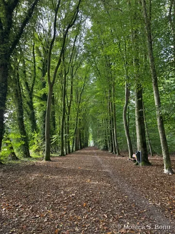
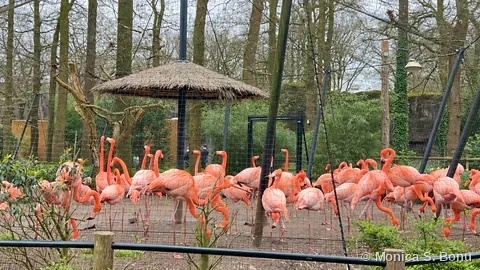
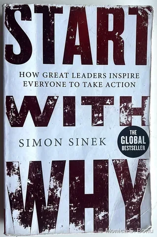
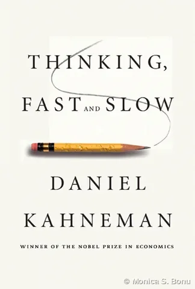
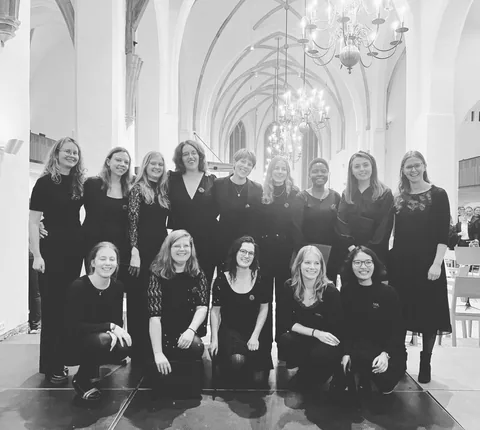
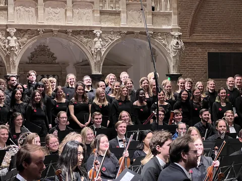
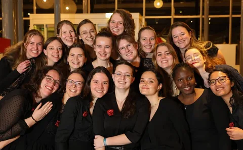

Life beyond work
Beyond Work
Nature, books, travel and singing keep me curious. They bring fresh perspectives and connect me with people and places.
01 / Nature museums · Zoos · PhotographyNature
01 / Nature museums · Zoos · Photography
Nature
I find nature fascinating. Whether I'm in a nature museum, at a zoo or taking photographs, I'm reminded how much we can learn from it.
Moments in nature · Photo gallery


02 / Books · My favouritesBooks
02 / Books · My favourites
Books
I enjoy books about how people think, decide and communicate. They shape how I approach complex questions and explain my work.
Favourite Books


03 / Places · Cultures · ExperiencesTravels
03 / Places · Cultures · Experiences
Travels
Travel lets me see how different cities manage space, water and heritage. It's where my planning background meets my curiosity.
Places I've explored · Photo gallery
04 / Music · Voice · ExpressionSinging
04 / Music · Voice · Expression
Singing
From 2022 to 2024, I sang with WSKOV, the Wageningen student choir and orchestra, and served on its Music Selection Committee.
Singing moments · Photo gallery


